롤토체스 추천메타 협곡야수 드레이븐 덱, 점유 상위 12덱 중 평균등수 3.97로 가장 낮아요
롤토체스 추천메타를 살피려고 롤체지지 메타덱 목록을 점유율 순으로 쭉 내려 보다가 숫자 하나에 눈이 딱 멈췄는데요ㅎㅎ 점유 1위 적응가 아펠리오스에 이어 2위인 협곡야수 드레이븐의 평균등수가 3.97이었고, 표본 1만 판 이상 12덱 가운데 4.0 아래는 이것 하나뿐이었거든요. 열어 보니 5코스트 6기에 아이템 12개가 얽힌 구성이었어요.
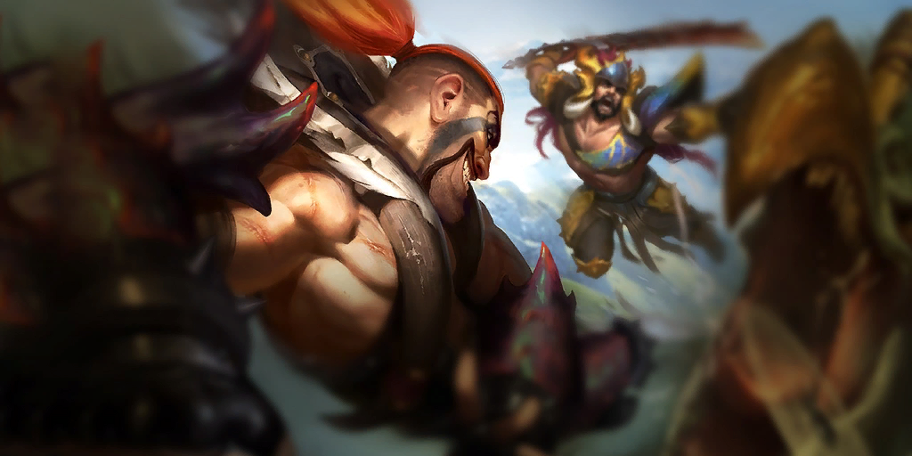
이 덱에서 코어 첫 번째 자리를 차지하는 유닛이 드레이븐이에요.
이미지 출처: Riot Games · Teamfight Tactics (CommunityDragon)
협곡야수 드레이븐, 점유 상위 12덱 중 평균등수가 가장 낮았어요
협곡야수 드레이븐은 롤체지지 점유 상위 12덱 가운데 평균등수 3.97로 가장 낮아요. 기준은 롤체지지 패치 18.4b, 마스터+ 랭크, 최근 2일, 전체 표본 356,938판이고 2026-10-10 12:07 KST에 조회한 값입니다. 라이브 수치라 내일은 숫자가 달라져 있을 수 있어요. 12덱은 표본 1만 판 이상 덱을 점유율 순으로 자른 것이고, 표는 평균등수가 낮은 네 덱에 점유 1위를 더했어요.
| 덱 | 점유율 | 1위 비율 | 순방(4등 이내) | 평균등수 | 덱 표본 |
|---|---|---|---|---|---|
| 협곡야수 드레이븐 | 10.50% | 25.4% | 56.7% | 3.97 | 37,467판 |
| 치명적인 꽃 아지르 | 8.43% | 14.0% | 52.9% | 4.32 | 30,104판 |
| 기원자 아리 | 9.53% | 11.2% | 52.8% | 4.37 | 34,002판 |
| 나무정령 이즈리얼 | 5.55% | 13.9% | 51.5% | 4.37 | 19,821판 |
| 적응가 아펠리오스(점유 1위) | 12.05% | 6.7% | 54.0% | 4.39 | 43,021판 |
점유율은 전체 356,938판에서 차지하는 비중이고, 나머지 지표는 각 덱을 잡은 판 안에서 계산돼 분모가 달라요.
전체 29덱으로 넓히면 햇빛 케일(3.86 · 3,245판)과 햇빛 르블랑(3.96 · 2,571판)이 숫자만 더 낮은데, 표본이 작아서 이번 비교에서는 뺐답니다.
협곡야수 드레이븐 구성, 8기 중 6기가 5코스트예요
이 덱은 8기 가운데 6기가 5코스트이고, 아이템을 드는 코어는 드레이븐·장로 드래곤·케넨·마오카이 네 명이에요.
| 유닛 | 코스트 | 스킬·특징 | 아이템 |
|---|---|---|---|
 드레이븐 드레이븐 | 5코 | 기본 공격으로 출혈을 걸고 도끼 둘을 던져요(사거리 6) | 3개 |
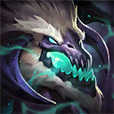 장로 드래곤 | 5코 | 팀 슬롯 2칸, 스킬로 모든 적을 기절시킨 뒤 화염 숨결 | 3개 |
 케넨 케넨 | 5코 | 화상 적 수만큼 주문력을 얻고 보호막·돌진·불꽃 폭풍 | 3개 |
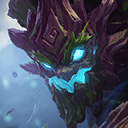 마오카이 | 5코 | 피해를 일정량 막을 때마다 묘목이 적에게 도약해요 | 3개 |
| 아이번 | 5코 | 아군에게 보호막과 피해 증폭을 줘요 | 없음 |
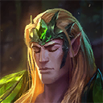 타릭 | 5코 | 타릭이나 짝 아군 체력이 처음 반 아래로 떨어지면 주변 아군에게 보호막 | 없음 |
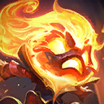 아무무 | 4코 | 지옥불·전쟁기계 활성 수를 채우는 자리 | 없음 |
 파수꾼 파수꾼 | 4코 | 협곡야수·선봉대 활성 수를 채우는 자리 | 없음 |
챔피언 아이콘 출처: Riot Games · Teamfight Tactics (CommunityDragon)
표의 파수꾼은 롤체지지 메타덱 목록에 감시자로 적힌 같은 유닛이에요. 스킬·특성 소속·조합식·효과는 롤체지지와 라이엇 게임 데이터 기준입니다.
코어 4명의 아이템 12개, 효과를 하나씩 읽어 봤어요
코어 네 명은 각각 완성 아이템 3개씩, 모두 12개를 들고 있어요.
| 아이템 | 드는 유닛 | 조합 | 효과 |
|---|---|---|---|
 죽음의 검 죽음의 검 | 드레이븐 | B.F. 대검 + B.F. 대검 | 수치 설명 없음 |
 구인수의 격노검 구인수의 격노검 | 드레이븐 | 곡궁 + 쓸데없이 큰 지팡이 | 매초 공격 속도 7% 중첩 |
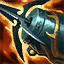 크라켄의 분노 | 드레이븐 | 곡궁 + 음전자 망토 | 기본 공격 시 공격력 3.5%(최대 15회), 15회 뒤 공격 속도 15% |
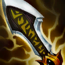 무한의 대검 | 장로 드래곤 | B.F. 대검 + 연습용 장갑 | 스킬이 치명타 가능, 추가 정밀당 치명타 피해 10% |
 최후의 속삭임 최후의 속삭임 | 장로 드래곤 | 곡궁 + 연습용 장갑 | 피해를 입히면 3초간 파열 30%(방어력 감소) |
 스테락의 도전 스테락의 도전 | 장로 드래곤 | B.F. 대검 + 거인의 허리띠 | 체력 60%에서 최대 체력 40% 보호막 |
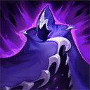 밤의 끝자락 | 케넨 | B.F. 대검 + 쇠사슬 조끼 | 체력 40%에서 대상 지정 불가, 해로운 효과 제거, 잃은 체력 15% 회복 |
| 정의의 손길 | 케넨 | 여신의 눈물 + 연습용 장갑 | 공격력·주문력 18%, 피해 흡혈 15%(체력 50% 기준으로 효과 변동) |
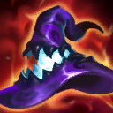 라바돈의 죽음모자 | 케넨 | 쓸데없이 큰 지팡이 × 2 | 수치 설명 없음 |
 가고일 돌갑옷 가고일 돌갑옷 | 마오카이 | 쇠사슬 조끼 + 음전자 망토 | 공격받으면 방어력·마법 저항력 +10(중첩) |
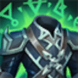 정령의 형상 | 마오카이 | 거인의 허리띠 + 여신의 눈물 | 매초 잃은 체력 2% 회복 |
| 워모그의 갑옷 | 마오카이 | 거인의 허리띠 × 2 | 최대 체력 18% |
아이템 아이콘 출처: Riot Games · Teamfight Tactics (CommunityDragon)
죽음의 검·라바돈의 죽음모자는 수치 효과 문장이 없어 조합식만 적었어요. 공식 18.4 노트는 '밤의 끝자락은 여전히 케넨에게 매우 좋은 아이템입니다'라고 짚었고, 마오카이는 막아 낸 피해마다 묘목이 튀는 스킬이라 방어력·체력·회복 세 개가 결이 맞아 보여요.
특성은 유일 특성 5개가 전부 골드 구간이에요
이 덱은 최상위 포식자·자연의 아버지·고목·현상금 추적자·에메랄드 성위 다섯 유일 특성이 모두 골드 구간이고, 협곡야수는 활성 수 4(브론즈 구간)에서 멈춰 있어요.
| 특성 | 활성 수(구간) | 채우는 유닛 |
|---|---|---|
| 현상금 추적자 | 1 (골드) | 드레이븐 |
| 최상위 포식자 | 1 (골드) | 장로 드래곤 |
| 자연의 아버지 | 1 (골드) | 아이번 |
| 고목 | 1 (골드) | 마오카이 |
| 에메랄드 성위 | 1 (골드) | 타릭 |
| 협곡야수 | 4 (브론즈) | 장로 드래곤(+2 보너스), 파수꾼 |
| 지옥불 | 2 (브론즈) | 케넨, 아무무 |
| 전쟁기계 | 2 (브론즈) | 마오카이, 아무무 |
| 선봉대 | 2 (브론즈) | 타릭, 파수꾼 |
표의 숫자는 단계가 아니라 활성 유닛 수예요. 협곡야수 유닛은 두 기뿐인데, 장로 드래곤이 최상위 포식자 효과로 협곡야수를 +2 더해 주니 장로 드래곤 1에 +2, 파수꾼 1을 합친 계산이 표시값 4와 맞아떨어져요. 구간별 전체표는 롤토체스 시즌18 신비의숲 협곡야수·개화·날렵이 특성 활성화 단계 정리 글에 있어요.
18.4 패치 대조, 수치 변경 중 이 덱에 닿은 건 이만큼이에요
공식 18.4 패치 노트의 수치 변경 중 이 덱에 닿은 건 드레이븐 상향, 케넨 하향, 아이번 칸 조정, 정령의 형상 상향이고, 18.4b에서는 핵심 유닛·특성 변경이 없어요.
| 대상 | 이전 ⇒ 이후 | 이 덱 영향 |
|---|---|---|
| 드레이븐 출혈 피해량(공격력) | 140/210 ⇒ 150/225 | 직접 · 상향 |
| 드레이븐 도끼 마나 환급 | 신규: 도끼가 한 명도 못 맞히면 마나 50% 환급 | 직접 · 신규 |
| 케넨 보호막 흡수량(주문력) | 250/350 ⇒ 230/300 | 직접 · 하향 |
| 아이번 자연의 아버지 칸 | 피해 증폭·추가 체력 8/12% ⇒ 6/10%, 방어력·마법 저항력 8/12 ⇒ 10/14 | 직접 · 일부 하향 일부 상향 |
| 정령의 형상 내구력 | 8% ⇒ 10% | 직접 · 상향(마오카이) |
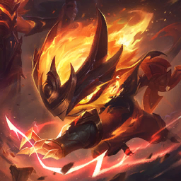
18.4에서 보호막 흡수량이 내려간 케넨이에요.
이미지 출처: Riot Games · Teamfight Tactics (CommunityDragon)
공식 설명은 드레이븐이 현상금 보상 하향 뒤 후반에 고전해서 출혈 계수를 올렸다는 취지예요. 장로 드래곤과 마오카이는 따로 바뀐 수치가 없고, 상향과 하향이 섞여 있어 3.97이 이번 패치 때문이라고 단정하긴 어렵죠. 3성 드레이븐이 3성 아이번보다 먼저 스킬을 쓰면 전투가 끝나지 않던 버그도 18.4에서 고쳐졌어요.
고르기 전에 알아둘 점 두 가지예요
고르기 전에 두 가지만 챙기면 돼요.
- 장로 드래곤의 슬롯이 두 개라 8기여도 보드에 아홉 자리가 필요해 보여요.
- 공식 서문이 18.5를 소규모 조정으로 예고했고, 10월 8일(18.4) 직접 조회해 둔 값 3.90이 오늘(18.4b) 3.97이라(패치·표본이 달라요) 메타는 아직 형성 중으로 보여요. 수치는 18.5 뒤에 낡을 수 있어요.
자주 묻는 질문
Q. 평균등수 3.97이면 이 덱으로 꾸준히 상위권을 하나요?
꼭 그렇진 않아요. 순방 56.7%를 뒤집으면 열 판 중 네 판 남짓은 5등 아래라는 뜻이라, 평균 3.97은 1위도 많고 5등 이하도 많아 편차가 큰 편이에요.
Q. 이름이 비슷한 협곡야수 장로 드래곤 덱은 같은 덱인가요?
아니요, 별개 덱이에요. 협곡야수 장로 드래곤은 점유 2.66%(9,512판)에 평균등수 4.17로 따로 집계돼요. 이름이 같은 1,941판짜리는 따로 있어요.
Q. 4코스트 파수꾼과 롤체지지의 감시자는 다른 유닛인가요?
같은 유닛이에요. 라이엇 공식 개요와 게임 데이터는 파수꾼, 롤체지지 메타덱 목록은 감시자로 적어서 이름이 갈려요. 18.4 패치 노트 본문에 나오는 '해방된 감시자 베인'은 별개의 스킨입니다.
5코스트를 여럿 모을 수 있는 판이면 이 덱을 달려 볼 만하고, 잘 안 모이는 판이면 코어가 4코스트인 점유 1위 적응가 아펠리오스를 같이 봐 두시면 좋겠어요.
✔ 롤토체스 같이 보기 좋은 내용
· 롤토체스 기원자 아리 조합 아이템 정리, 특성 빌드까지 한 번에
· 롤토체스시즌18 싸움꾼 마스터 이 렝가덱 사용법 공략
· 롤토체스 사냥꾼 시비르 덱 추천 — 점유율 2위 강세덱, 특성 9개 한 번에 켜는 조합
참고한 곳
· 라이엇 게임즈 — 전략적 팀 전투 패치 노트 18.4(18.4b 추가 노트 포함)
· 라이엇 게임즈 — 전략적 팀 전투 신비의 숲(세트18) 공식 개요
· 롤체지지 메타덱·챔피언·아이템 정보 (2026.10.10 12:07 KST 조회)
· 이미지 출처: Riot Games · Teamfight Tactics (CommunityDragon)